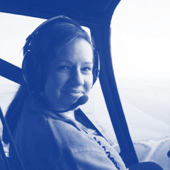

Who we are
We are a 501(c)(3) organization comprised of entrepreneurs, educators and pilots who want every student to have the opportunity to build a flight plan for life. Aviation has been transformational in our own lives. Now we are giving back and ensuring that younger generations experience the passion and profound life-changing path that aviation provides.
Those of us who are pilots know that our first solo flight is one of the most memorable experiences of our lives. For pilots, flight is captivating, inspiring a desire and a passion that takes hold of you and changes your flight plan for life.
Leadership & Team
-
 Ethan Martin Founder, CEO
Ethan Martin Founder, CEOEthan has been actively reinventing aviation philanthropy for years.
-
 Joshua Granof
COO, Board Member
Joshua Granof
COO, Board Member
Joshua Granof is an active primary, instrument and multi-engine flight instructor. As an affiliate faculty member at Metropolitan State University of Denver, he teaches aviation courses and as a coach for the precision flight team. Granof received a BS in engineering from the University of Colorado at Boulder.
- Lexi Widman Principle
-
 Trevor Waldorf
Design Fellow
Trevor Waldorf
Design Fellow
Trevor is a design practitioner and technologist committed to improving K-12 and post-secondary education in the U.S.
Trevor has led design teams in the music industry for Mocktail, built product with companies like CA Technologies and Techstars, and has a background serving in public health in rural Alaskan communities.
Board
-
 Gretchen L. Jahn
Board Member
Gretchen L. Jahn
Board Member
Gretchen Jahn is President and CEO of V1 Advisors, a management and business operations consulting company. V1 assists CEOs and boards of small and mid-size companies with strategy, business operations, and board process. She is often brought in as an outside board director.
Ms. Jahn has over 30 years' entrepreneurial experience in manufacturing, software and aviation leadership, both domestic and international. She has led business startup and turnaround efforts in several companies as either an executive or a consultant, and has actively propelled companies forward as an outside board director. Clients represent a wide range of industries including foreign government entities, startups, biotechnology and pharmaceuticals, software, ecommerce, banking, manufacturing, medical device, construction, distribution, and aviation.
Ms. Jahn was previously CEO of Mooney Airplane Company, bringing it out of bankruptcy and reestablishing the brand. She was also COO of REMOS Aircraft, a German manufacturer of light sport airplanes, and General Manager of Alpha Aviation Ltd of New Zealand, a manufacturer of fully-aerobatic two seat training airplanes. She was co-founder and CEO of Aegis Analytical Corporation, a software company providing solutions for pharmaceutical and biotech companies, where she raised $20 million in 3 rounds of venture capital financing. She has been a senior executive at several companies, leading automation efforts, and been a partner in two other software and consulting firms.
Ms. Jahn received a BA from Lawrence University and an MA from the University of Colorado. She has her Certificate in Integrated Resource Management (CIRM) from APICS, and is a Certificated Due Diligence Professional (CDDP) with IDDA. She is Chairman of the Board of Aegis Creative Communications, Chairman of the Colorado Chapter of the Ninety-Nines, and a board member of the Light Aircraft Manufacturers Association and of Mobile Applications for Connected Health, Inc. She was recently the Chairman of the Board of DeltaHawk Engines, and a volunteer Director of the Air Race Classic for 14 years.
-
 Doug Johnson
Board Member
Doug Johnson
Board Member
Advisory Board
-
 Jennifer Urban
Advisory Board Member
Jennifer Urban
Advisory Board Member
Ms. Jennifer Urban is an associate in the Business Law Department at Cozen O’Connor, a full-service, international firm with nationally recognized practices in litigation, business law, and government relations. As a member of the Transportation and Trade Group, she concentrates her practice on aviation, unmanned aircraft systems (UAS)/drones, and maritime matters.
Ms. Urban counsels U.S. and foreign clients on matters involving aviation regulatory compliance, the purchase and sale of corporate aircraft, international antitrust issues, and trade sanctions. To complement the advice she provides to clients relating to UAS/drones, she passed the FAA’s initial aeronautical knowledge test and earned a Remote Pilot - Small Unmanned Aircraft Systems Airman Certificate to conduct drone operations for commercial purposes.
An avid Ole Miss fan, Ms. Urban earned her LL.M. in Air and Space Law, J.D., M.B.A. and B.A. in Public Policy Leadership and Political Science, all from the University of Mississippi. Her wanderlust has taken her to over 40 countries and further developed her passion for experiencing and learning from other cultures.
-
 Lawrence Cole
Advisory Board Member
Lawrence Cole
Advisory Board Member
Lawrence Cole is a senior manager for Google Marketing Solutions. Prior to Google, he managed marketing operations for vBulletin software, a subsidiary of Internet Brands and also spent time working within the sales, engineering and operations functions of UPS. Lawrence started his career as a software engineer for Earthlink, Inc developing java and XML interfaces for corporate clients such as the NFL.
Lawrence was first introduced to aviation growing up in Lakeland, FL where he attended the Sun N' Fun air show each year as a youngster. Then in college he spent 5 summers working for NASA, where he wrote aviation-oriented software programs at Langley Research Center in Langley, VA and worked on GPS and moon rover related design, engineering and programming projects at Marshall Space Flight Center in Huntsville, AL and The Jet Propulsion Laboratory in Pasadena, CA.
Lawrence has a Distinguished Toastmaster designation from Toastmasters, International and is a member of Mensa International and Kappa Alpha Psi Fraternity, Inc. He has volunteered his time in the past as a mentor for the Tiger Woods Foundation, Black Girls Code, and School on Wheels, which provides in-home educational assistance to homeless children living in emergency shelters with their families.
-
 Benjamin J Goodheart
Advisory Board Member
Benjamin J Goodheart
Advisory Board Member
Benjamin Goodheart is an aviation professional with over 20 years of experience in the field. His diverse career began in aviation line service and has expanded to roles in aviation safety and risk management, operations, training, and professional flying. He has worked in and with a variety of aviation organizations, including flight training organizations, business and general aviation operators, manufacture and overhaul providers, ground service, and major airlines. His varied experience affords him a wide variety of opportunities to practice within his passion.
Benjamin is an active author and researcher focused on novel applications within aviation safety management and organizational climate and culture.
He holds a Master of Science in Safety Science, and a Ph.D. from Embry‐Riddle Aeronautical University with a specialization in applied aviation safety. Dr. Goodheart is a Certified Safety Professional as well as an Airline Transport Pilot and Flight Instructor who currently serves as the Managing Director of Versant, and international safety and risk advocacy firm, and served as President of an aviation nonprofit organization, Mercy Wings Network through 2016.
In 2014, Dr. Goodheart was named one of Aviation Week and Space Technology magazine’s Top Forty Under 40 in aviation worldwide.
-
 Chuck Gensler
Advisory Board Member
Chuck Gensler
Advisory Board Member
From Parker, Colorado, Chuck Gensler was named the 2017 National Certificated Flight Instructor of the Year. Chuck's lifelong interest in aviation began early at the knee of his father—a U.S. Air Force Pilot in three wars—who took him to countless air shows where he watched the Thunderbirds and Blue Angels perform.
This led Chuck to enroll in USAF ROTC while at the Citadel earning his B.S. degree in Civil Engineering. Upon graduation in 1974, he entered Air Force flight training, graduating near the top of his class. The USAF Air Training Command selected Chuck as an instructor pilot, and he quickly discovered his true passion as a teacher. He accepted a position as a career trainer in the Air Force, and spent the next 24 years in various roles educating and training military pilots.
Chuck retired from the USAF in 2000 with the rank of Lieutenant Colonel. For the next seven years, he served as Chief Flight Instructor of the Aspen Flying Club. Then in 2007, he co-founded Independence Aviation in Denver and served as its Chief Flight Instructor for the next six years. In 2016, Chuck led a team that developed a novel continuous proficiency training program at Independence called the Complete Proficiency Approach in which GA pilots receive recurrent proficiency training every 60 days throughout the year. Chuck holds ATP, CFII, and MEI certificates, and has logged 9,400 hours total time, 8,000 of them as an instructor.
-

Melinda Benson Viteri
Advisory Board Member
Melinda Benson Viteri is the MIT STEM Coordinator at the British International School of Washington D.C. and qualified primary and high school teacher. She is also Co-Director and Founder of D.C. Youth Aviation Inc., a non profit that enables local high school and college students in the Washington DC area to rebuild old airplanes, including the Piper Pacer and Cessna 172 models.
Melinda is British; born and raised in Yorkshire. In the U.K. she worked for many years as Advisory Teacher of the Deaf, Blind and Audiologist for the government/education council. She enjoys flying light aircraft and leads the new aviation scholarship program for the RAeS serving as Their Education Chair in D.C. Her passion is promoting aviation to youths and ensuring that they are ready for the jobs of the future.
-
 Craig Dixon
Advisory Board Member
Craig Dixon
Advisory Board Member
Craig Dixon works at Amazon Web Services and helps students and faculty to learn about cloud computing. Prior to joining AWS, Craig held several roles (from corporate business development to strategy consulting) at PayPal, Blackboard, First Annapolis Consulting. He started his career as a full-stack application developer in Merrill Lynch's Global Banking Group.
Craig holds a Bachelor of Arts degree in Computer Science from Boston University. Also, he received a Master of Business Administration from the Tuck School of Business at Dartmouth where he was a Center of Digital Strategies Fellow. Craig is an avid entrepreneur and innovator, having launched two technology companies and receiving a patent.
-
 Melissa Lucas Singer
Advisory Board Member
Melissa Lucas Singer
Advisory Board Member
Melissa Lucas Singer is a visionary business leader with expertise in luxury hospitality, retail and private aviation. Over the past two decades, she has worked as an innovator and turnaround expert with emphasis on developing inspiring leaders, managing service culture transformations, creating new revenue streams,and delivering operational excellence. Melissa’s innovative process and technology ideas have been a significant driver behind industry best financial results. In 2014, Microsoft named her Customer Excellence - Business Visionary of the Year. Melissa is currently the Senior Director of Brand Extension at Signature Flight Support managing 20 FBO franchise locations across the globe with a program of her own design called Signature Select.
She has held senior leadership positions with Flight Options\FlexJet and the Walt Disney Company. Her passion to create equals her passion for giving. She's been on the BBA Aviation Charitable Giving Committee which has awarded over $1M to a variety of charities around the world for over four years. She has also served as Director of Fundraising for Poodle and Pooch Rescue of Orlando which employs volunteer private aviation to coordinate high volume rescues across the southeast United States. Her affinity for the Aviation Community Foundation is her desire to create an industry that inspires the most talented and diverse young hearts and minds to dream bigger!
-
 Annie Domko
Advisory Board Member
Annie Domko
Advisory Board Member
Annie Domko is an aviation professional with nearly 20 years of diverse experience in the aviation industry, ranging from the civilian sector to military operations. Originally from Boulder, Colorado, she began flying when she was 15 and followed her passion into college, attending Purdue University where she earned her Bachelor of Science in Aviation Technology. Simultaneously, she received her professional pilot degree, and served in the Naval Reserve Officer Training Corps, obtaining her private, instrument, commercial, and multi-engine ratings.
Commissioned as an Ensign in the United States Navy, she began her Naval flight training in the T-34B, and then advanced flight training in the T-45A. After earning her “Wings of Gold” in June 2008, she headed to the West Coast for training in the F/A-18C, which she flew for four years supporting Operations New Dawn and Enduring Freedom. Subsequently, she became an instructor pilot at the Fleet Replacement Squadron, training the next generation of fighter pilots in both the legacy F/A-18C-D Hornet, as well as the F/A-18E-F Super Hornet. She left Active Duty after 10+ years of service, and continues to be a member of the Navy Reserve. Upon her exit from the military, Annie began working for Airborne Tactical Advantage Company (ATAC), flying the Mk-58 Hawker Hunter as a civilian contract adversary pilot out of Kaneohe Bay on the Hawaiian island of Oahu.
Annie currently lives in Waialua, Hawaii with her husband, and is President of the local Honolulu Chapter of Women in Aviation, International. Her passion and drive in the aviation industry is to help the underserved and underprivileged gain access to all the opportunities available in the aviation field, through exposure and sharing of resources and knowledge.
-
 Craig Teasdale
Advisory Board Member
Craig Teasdale
Advisory Board Member
Craig is the Area Director for Signature Flight Support with oversight responsibilities at Centennial (APA), Denver International (DEN), Rocky Mountain Metro (BJC), Anchorage International (ANC), Spokane International (GEG), Bozeman Yellowstone International (BZN), and Scottsdale (SDL) airports. Over the past 30 years Craig has held positions within aviation and Signature Flight Support as General Manager, Area General Manager and Area Director.
Most recently in 2014 Craig led new FBO acquisition teams for Signature FBO’s at Van Nuys (VNY) and Scottsdale (SDL). In 2016 Craig also lead an Integration team for Signature’s acquisition of Landmark Aviation. Craig was recognized as the Area Director of the Year within Signature’s World Wide network in May 2017. Craig also holds a Commercial Pilot certificate with CFI/Multi engine ratings. Craig is a graduate from Metropolitan State University, Denver, CO with a BS in Aviation Management.